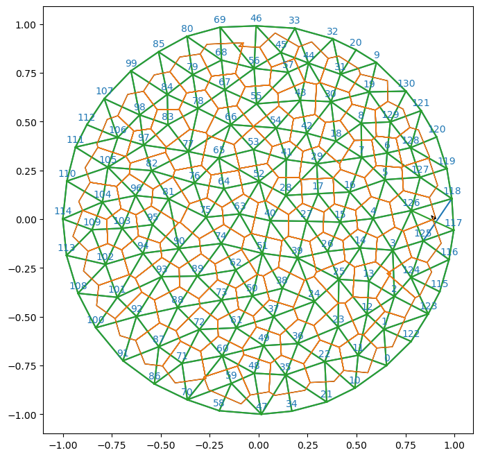

We often need to not only move the vertices of a mesh, but modify the connectivity. In half-edge meshes, there are several “elementary” mesh modifications. For triangulax, by far the most important one is the edge flip (see below). It is the only modification that preserves the number of all mesh elements, and is thus relatively easy to make compatible with JAX and differentiable programming.
Design note: for JIT-compatibility, none of the topology modification functions (flip_edge, collapse_edge, split_vertex) check in advance whether they will produce a valid mesh. Separate predicate functions (can_flip_edge, can_collapse_edge, can_split_vertex) are provided for this purpose: call them before the modification if you need to guard against invalid operations.
Edge flips / T1s
In our simulations, cells will exchange neighbors (T1-event). In the triangulation, this corresponds to an edge flip. We now implement the edge flip algorithm for HeMeshes. We basically edit the various connectivity arrays (in a JAX-compatible way).
The algorithm (and the naming conventions in flip_edge) are from here.
See https://jerryyin.info/geometry-processing-algorithms/half-edge/. The algorithm is slightly modified since we keep track of the origin and destination of a half-edge, and use arrays instead of pointers. Returns a new HeMesh, does not modify in-place.
Does not check whether the flip produces a valid mesh. Use can_flip_edge to check first.
# flip edge and recompute face positionsflipped_hemesh = flip_edge(hemesh, e=335)flipped_geommesh = geom.set_voronoi_face_positions(geommesh, flipped_hemesh)
# connectivity is still validigl.is_edge_manifold(hemesh.faces)[0], igl.is_edge_manifold(flipped_hemesh.faces)[0], flipped_hemesh.iterate_around_vertex(100)
# you can see the flipped edge between vertices 126-117 in the plot below (middle right)fig = plt.figure(figsize=(8,8))plt.triplot(*geommesh.vertices.T, hemesh.faces)plt.triplot(*flipped_geommesh.vertices.T, flipped_hemesh.faces)ax = plt.gca()p1 = msh.cellplot(hemesh, geommesh.face_positions, cell_colors=np.array([0.,0.,0.,0.]), mpl_polygon_kwargs={"lw": 1, "ec": "k"})p2 = msh.cellplot(flipped_hemesh, flipped_geommesh.face_positions, cell_colors=np.array([0.,0.,0.,0.]), mpl_polygon_kwargs={"lw": 1, "ec": "tab:orange"})ax.add_collection(p1)ax.add_collection(p2)plt.axis("equal")msh.label_plot(geommesh.vertices, hemesh.faces, fontsize=10, face_labels=False)

Repeated flips
In a simulation, we need to carry out edge flips at every time step. The function flip_edge does a single edge flip by modifying the connectivity arrays, and is already JIT-compatible.
To carry out multiple flips, we must do them in sequence (otherwise, you risk leaving the mesh in an invalid state). The simplest approach is flip_all, which does a jax.lax.scan over all half-edges. This is JIT-compatible because the scan length is fixed (= number of half-edges), but can be slow for large meshes since it visits every edge even if only a few need flipping.
A more efficient alternative is flip_n_shortest, which sorts edges by length, selects the max_flips shortest candidates, and scans only over those. This is significantly faster (e.g., 100–110 μs for 10 flips vs. 600 μs for a full scan on a typical mesh). The max_flips parameter is a static argument: changing it triggers recompilation, but within a simulation it is typically constant. See tutorials/03_vertex_models for a full usage example with per-edge cooldowns.
<module 'triangulax.geometry' from '/Users/nc1333/Documents/Princeton/Coding/triangulax/triangulax/geometry.py'>
# let's detect all edges with negative dual length, and flip them.dual_lengths = geom.get_oriented_dual_he_length(geommesh.vertices, geommesh.face_positions, hemesh)edges = jnp.where((dual_lengths <0.0) &~hemesh.is_bdry_edge & hemesh.is_unique)[0]# we only want to flip unique hes!edges, edges.size
Flip all (unique) half-edges where to_flip is True in a half-edge mesh. Wraps flip_edge.
Note: scans over all half-edges, which can be slow for large meshes. See flip_n_shortest for a more efficient alternative that only scans over a fixed number of candidate edges.
def flip_n_shortest( hemesh:HeMesh, # The half-edge mesh. edge_lengths:Int[Array, 'n_hes'], # Per-half-edge edge lengths (e.g., dual/Voronoi edge lengths). threshold:float, # Edges shorter than this are flipped. max_flips:int=10, # Maximum number of edges to consider. Static argument (changing it triggers recompilation).)->tuple: # The mesh after flipping.
Flip up to max_flips shortest edges below threshold.
Sorts edges by length, selects the max_flips shortest unique, non-boundary candidates, and flips those below threshold. Much faster than flip_all for large meshes.
The edge flip is the only topological modification of a half-edge mesh that leaves the number of vertices, edges, and faces constant. This makes it especially easy, and compatible with JAX’s “static array size” paradigm.
However, we may also want to simulate processes (like cell division or death) where the number of cells does change. We implement two elementary operations, which are inverses of one another: edge collapse and vertex split.
We must be careful to preserve the manifold structure of the mesh and deal with edge cases. We test the resulting half-edge mesh via plots and use libigl to verify that the mesh is in a valid state.
We also need a data structure (MeshReindexMap) to keep track of how vertices/edges/faces of the initial mesh map to those of the modified one.
Check whether collapsing half-edge e would produce a valid mesh (link condition).
An edge can be collapsed if it is interior and the two endpoint vertices share exactly two common neighbors (the opposite vertices of the two adjacent faces). This is the discrete “link condition” that ensures the collapse preserves manifoldness.
Collapse half-edge e in a half-edge mesh. Keeps the origin vertex of e.
Returns a new HeMesh (does not modify in-place), and a MeshReindexMap for remapping vertex, half-edge, and face indices from the original mesh to the new mesh.
Does not check whether the collapse produces a valid mesh. Use can_collapse_edge to check first.
JIT-compatible, but calling with different numbers of vertices/edges/faces will cause recompilation.
# test on the existing example mesh. pick some interior, unique half-edgecandidates = np.where(np.asarray(hemesh.is_unique & (~hemesh.is_bdry_edge)))[0]e_collapse = candidates[40]print("Collapsing half-edge", e_collapse, "with vertices", int(hemesh.orig[e_collapse]), int(hemesh.dest[e_collapse]))hemesh_collapsed, remap = collapse_edge(hemesh, e_collapse,)vertices_collapsed = geommesh.vertices[remap.v_reverse]
The opposite of edge collapse: splitting a vertex into two. We specify two half-edges (the “splitting axis”) that originate at a common vertex. Like before, we need a MeshReindexMap tracking how old and new mesh elements are related. New elements are appended at the end of the arrays.
edge manifold: True
vertex manifold: True
Valid HE mesh: True
# inverse consistency check: split then collapse the inserted edgee_join = hemesh.n_hes+1# error for 2*hemesh.n_vertices+1 ?hemesh_back, back_map = collapse_edge(hemesh_split, e_join)F0 = msh._canonical_faces_np(hemesh.faces)F_back = msh._canonical_faces_np(hemesh_back.faces)print("back to original counts?", hemesh_back.n_items == hemesh.n_items)print("back to original faces?", np.array_equal(F0, F_back))print("Valid HE mesh after collapse:", msh.test_mesh_validity(hemesh_back))
back to original counts? True
back to original faces? True
Valid HE mesh after collapse: True
The following topological operations are not yet available in triangulax:
Edge split: insert a new vertex on an existing edge, splitting it and both adjacent faces. (Distinct from vertex split above.)
Edge contraction with boundary support: the current collapse_edge only handles interior edges.
Batch collapse / split: JIT-compatible routines for performing multiple collapses or splits per time step, analogous to flip_all / flip_n_shortest for edge flips.
Vertex removal: remove a vertex and re-triangulate the resulting hole.